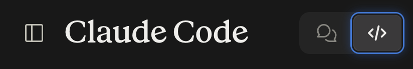

Claude Code, Codex and Cursor are generally seen as coding agents.
So if you work in sales, marketing, operations, HR or any other role where your work lives in documents, spreadsheets, decks and research rather than code, it is easy to think:
This is not for me.
Let us see why that might not be true.
What is an agent?
Most people first experience AI through a chat window, like ChatGPT.
You ask a question, give it some context and get a response.
An AI agent works a little differently.
You give it access to a working environment, tell it what you want done and it can take multiple steps to get there. It can read files, create or modify them, use tools and come back to you when it needs a decision.
The difference is small when the task is small.
It becomes much more useful when the work involves many files, repeated steps or context that needs to stay together.
Chat window
You are the transport layer
Agent
You set the direction
Claude Code, Codex and Cursor are all examples of AI agents.
They are often seen solely as coding agents because developers use them to work on software projects. Claude Code and Codex are indeed built and positioned primarily around coding today.
But these tools can do far more than write code.
The project you give an agent could contain code. But it could also contain spreadsheets, pitch decks, contracts, research papers or any other file.
Code is just one kind of file.
Where chat starts breaking
For the longest time, I kept these two very separate from each other. I used the chat windows for all my non-coding work and Claude Code was solely reserved for work which required coding, like dashboards or applications.
The problems began when the context got long. I started noticing responses ignoring my standing instructions and going back to the default style, tokens running out within a few minutes of starting the work, missing context and incorrect decisions.
That is when I stumbled upon an article, which helped me look at these agents as more than just coding agents.
How to get started?
Pretty much the same way you would brief a new joinee on your team.
- What do you want at the end?
- What does the agent need to know?
- What should it not do?
- How should it handle uncertainty?
- What should it show you before making changes?
You do not need to learn developer terminology.
You just need to explain the work in simple, clear English.
A good first project
Start with a simple project. Not the one your job depends on. ;-)
Create a folder and put all the relevant files in it. Make a copy if you are not sure.
I use Claude Code for this, so here I am explaining workflow through Claude Code. The steps are more or less the same across these tools.
Open Claude Code. It comes with your Claude subscription and is available on both the browser and desktop versions. If you are completely new to Claude Code toggle to the button which looks like </>

Then copy-paste this prompt:
Look through this <folder name> saved in <location>. The folder has all the context about the project I am working on, <project name>.
First, go through the files in this folder and absorb the context.
Then tell me:
- What you understand about the project and the problem we are trying to solve
- What you understand about the current situation or workflow
- What decisions or constraints are already clear
- What is still unclear or missing
Do not make any changes or start solving the problem yet. If something is unclear, ask me rather than making an assumption.
You can also share any standing instructions related to the project. For example:
- Ask me when something is unclear. Do not make assumptions.
- Use the files in this folder as the source of truth. If something is missing, tell me rather than filling the gap.
- Keep documents concise and use plain language.
- Do not modify existing files unless I ask you to. Save new versions separately.
- Do the detailed analysis in the files. In chat, give me only the key findings and decisions I need to make.
These instructions stay with the project, so you do not have to repeat them every time you start a new task.
Now, every time you need some help, you can use this space to work without having to share the context or instructions repeatedly.
And for anything new, just save the files in the same folder and ask the agent to look through those.
The agent can also use the same folder to save any output, document or other artifact it creates.
From Chat to Context
You are not just using AI to answer questions or generate something for you.
You are giving it a place to work, with the context and files it needs.
And once that context stays with the project, the way you work with AI starts to change.
You do not have to keep bringing the project to the AI.
The AI can work with you inside the project.
That is the shift from working with AI inside a chat to working with AI inside the project itself.
Pick one project you are already working on. Put its files in one folder and paste the prompt above. Then ask it for one thing that would normally take you an hour, like a first draft of the update you owe someone this week.